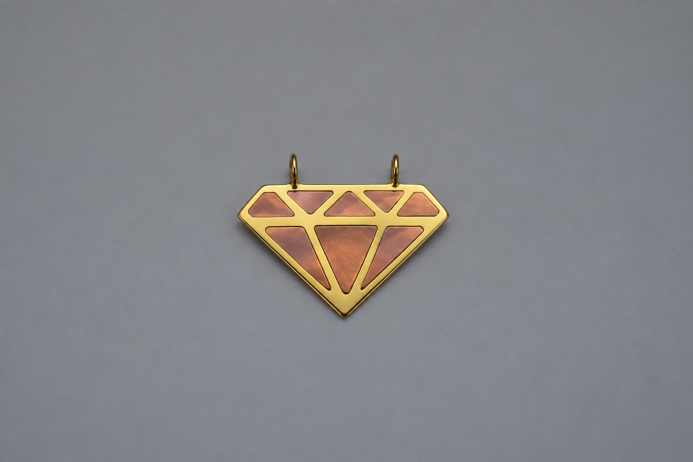
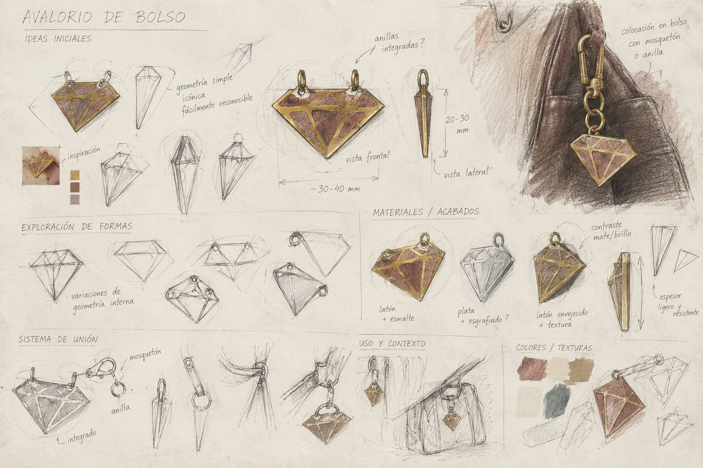
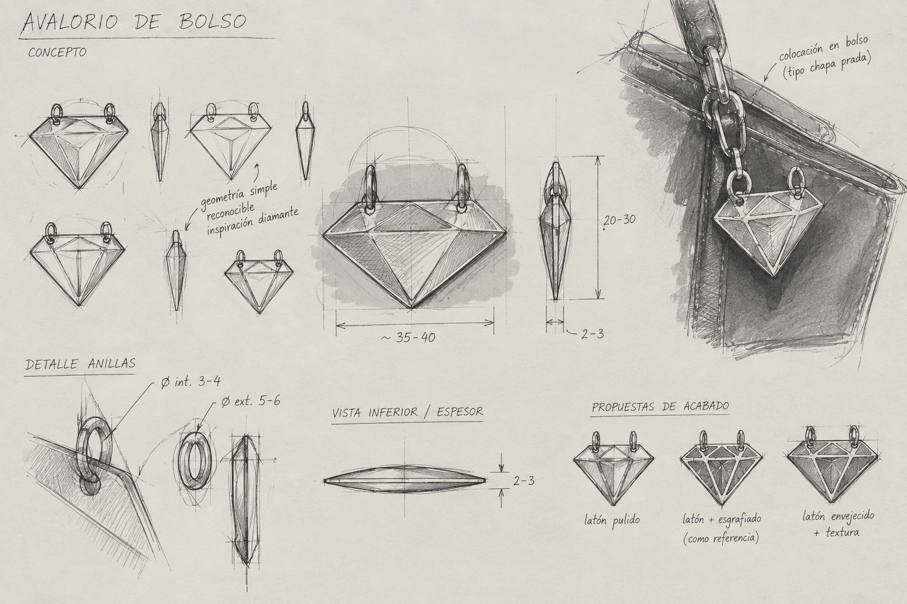
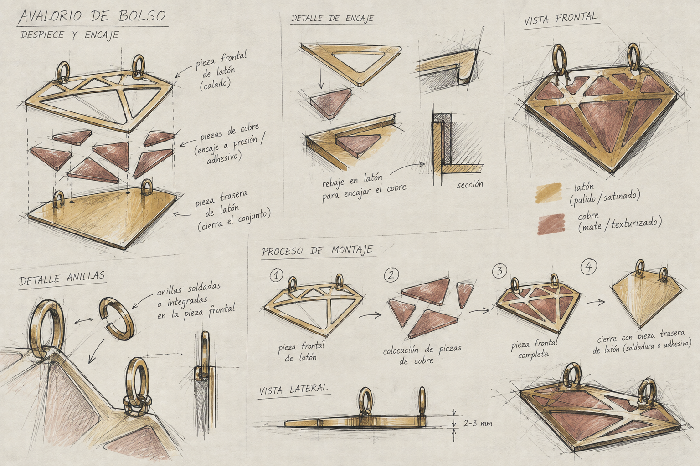
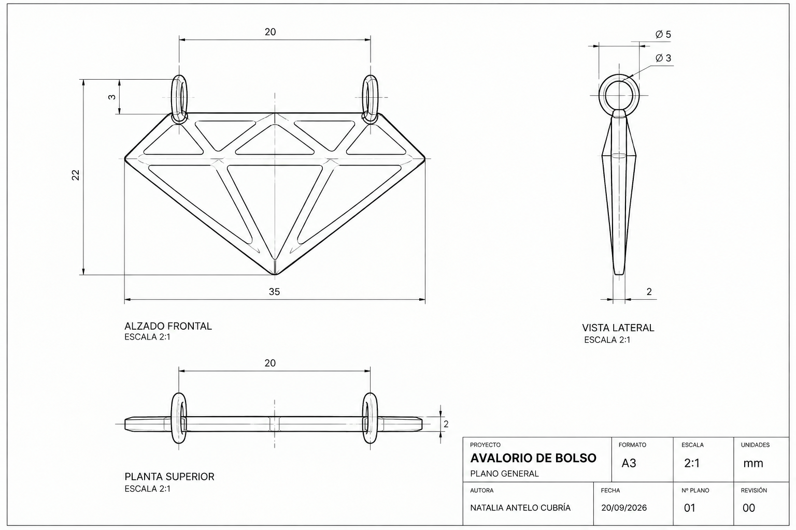
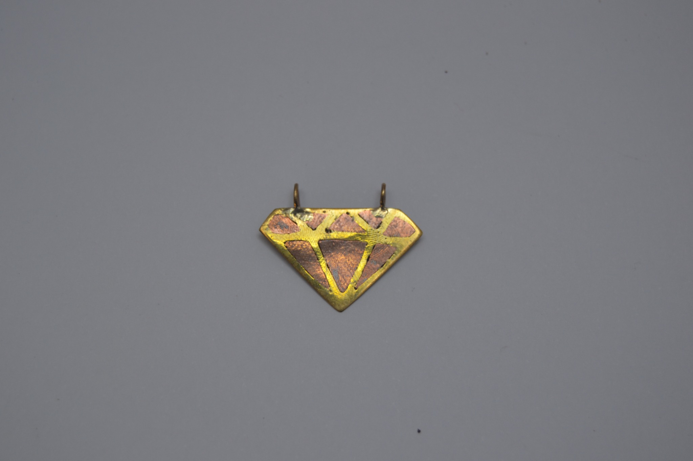

SHINE

SHINE explores jewellery beyond the body, translating the visual language of a cut diamond into a small ornament designed to attach to a handbag.
The piece develops a simple, recognisable geometry through two contrasting metals. A brass front defines the diamond structure while copper inserts occupy its internal facets, creating contrast through colour, finish and material.
The design was developed from early form studies and attachment options into a defined construction system. The final proposal measures approximately 35 × 22 mm with a 2 mm body thickness and uses two integrated rings, allowing the object to hang from a bag fitting, ring or clasp.
The project moves from ideation to assembly thinking, technical drawing and prototype. The construction studies consider a brass front and back, recessed copper pieces and integrated rings, treating the ornament as a small product in which appearance, thickness and attachment all have to be resolved together.




